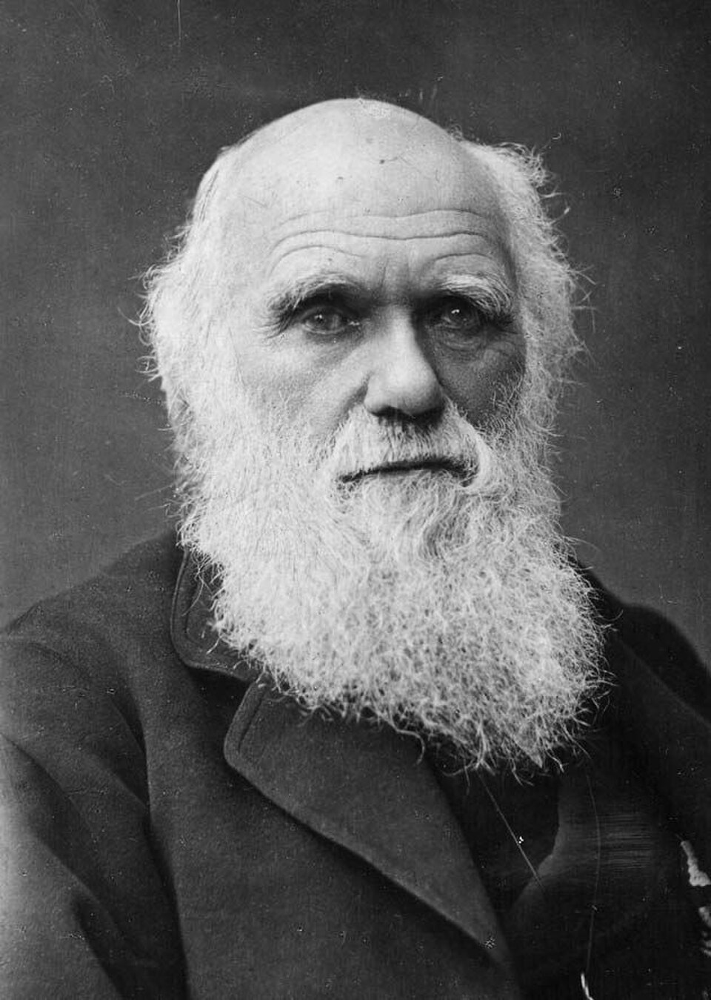

Un naturalista inglés sostiene que las especies se transforman: se agotó en un día el libro del señor Darwin
«El origen de las especies», del respetado autor del viaje del Beagle, propone que las formas vivientes descienden unas de otras por selección natural. Los mil doscientos cincuenta ejemplares se vendieron enteros a los libreros en la jornada.

El señor Charles Darwin, naturalista de reputación intachable desde su célebre viaje alrededor del mundo a bordo del Beagle, publicó hoy por la casa Murray un volumen cuyo título completo ya es conversación de todos los salones: «Sobre el origen de las especies por medio de la selección natural». La edición entera quedó comprometida con los libreros en el día. El autor, que padece del estómago y de los nervios, aguarda la tormenta en su retiro de Down, en Kent, desde donde confiesa a sus amigos que publicar este libro fue «como confesar un asesinato».
La tesis es tan simple de enunciar como enorme en sus consecuencias: nacen más criaturas de las que pueden vivir; las que por azar heredan alguna ventaja sobreviven y la transmiten; y ese cernidor implacable, obrando sobre eras inmensas de tiempo, basta para transformar una especie en otra. No hace falta, sugiere el libro con prudencia de cirujano, que cada especie haya sido creada por separado: la naturaleza se esculpe a sí misma. Del hombre, el autor apenas dice una línea —que «se arrojará luz sobre su origen»—, pero todos los lectores la subrayaron.
El libro estuvo veinte años en el cajón. Las primeras notas datan del regreso del Beagle, cuando los pájaros traídos de unas islas del Pacífico, variando de pico en pico según la isla, le plantearon al naturalista la pregunta prohibida; desde entonces acumuló pruebas con paciencia de notario —palomas criadas en su propio jardín, percebes disecados por millares, cartas a criadores y jardineros de medio mundo— sin decidirse a publicar. Lo decidió el correo: el año pasado le llegó desde las islas Molucas el manuscrito de un joven naturalista, el señor Wallace, que había dado solo, y entre fiebres tropicales, con la misma idea. Los amigos de ambos arreglaron una presentación conjunta y caballeresca ante la sociedad científica; el libro de hoy es esa carrera, ganada por una nariz de veinte años.
Quienes visitan Down describen al revolucionario más manso del imperio: un caballero rural que madruga, camina siempre el mismo sendero de arena mientras piensa, juega su partida de chaquete con su esposa cada noche y consulta sus dudas con los hijos como si fueran colegas. La edición se vende a quince chelines, y la biblioteca circulante de Mudie, que surte de novelas a las señoras de Inglaterra, tomó de entrada quinientos ejemplares: la transmutación de las especies entrará a los salones por la misma puerta que los folletines. El autor, entre tanto, toma las aguas en Yorkshire, lejos del ruido, con el estómago en rebelión permanente; no falta quien diga que el mal del señor Darwin es su propia teoría, dándole batalla desde adentro.
Los naturalistas del continente ya toman partido, y los púlpitos de Inglaterra preparan sus sermones: si el señor Darwin tiene razón, el relato del Génesis pasa a ser poesía sagrada antes que historia natural. Habrá polémica para una generación entera, y acaso más. Pero quien lea el libro con honestidad encontrará algo peor que una herejía: una explicación. Y las explicaciones, una vez publicadas, no conocen el camino de regreso.